6시간 넘게 기록되고 있어요. 종료를 잊으셨나요?
분
내려놓은 기록
첫 기록을 마치면 여기에 일·주·월 기록이 쌓여요.
오늘0분
이번 주0분
이번 달0분
6시간 넘게 기록되고 있어요. 종료를 잊으셨나요?
첫 기록을 마치면 여기에 일·주·월 기록이 쌓여요.
이 페이지는 내려놓은 시간을 재 줍니다. 알림을 끄는 건 휴대폰 설정이 해야 해서, 한 번만 연결해 두세요.
단축어 앱을 열고 아래 자동화 탭에서 새로운 자동화를 누릅니다.
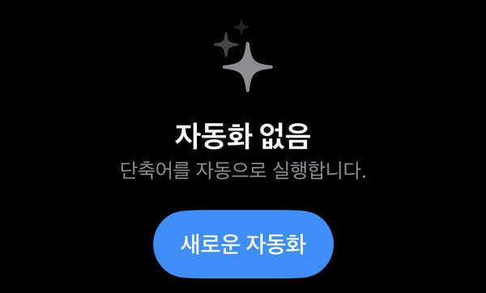
목록에서 NFC를 고릅니다.
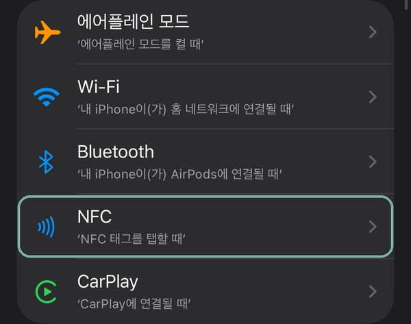
NFC 태그 옆 스캔을 누릅니다.
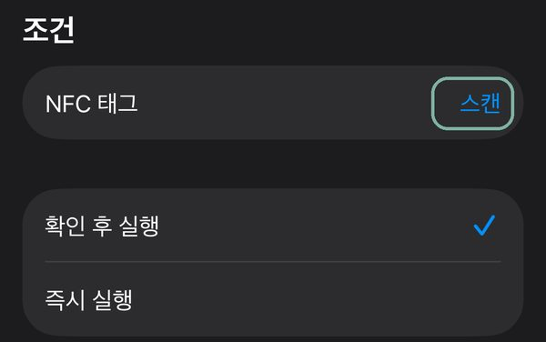
휴대폰 윗부분을 하마비 판석의 표시 자리에 댑니다.
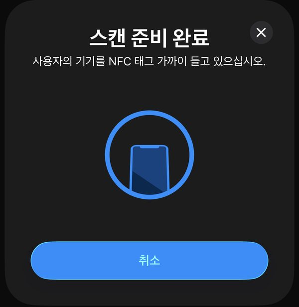
태그 이름을 하마비로 적고 확인을 누릅니다.
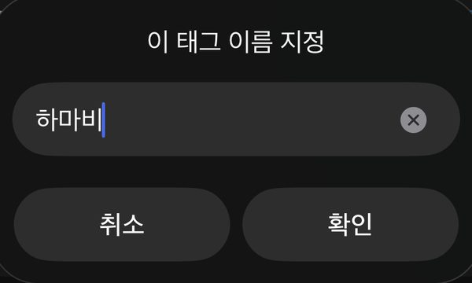
즉시 실행을 고르고 다음을 누릅니다. 실행 알림은 원하면 켜 두세요.
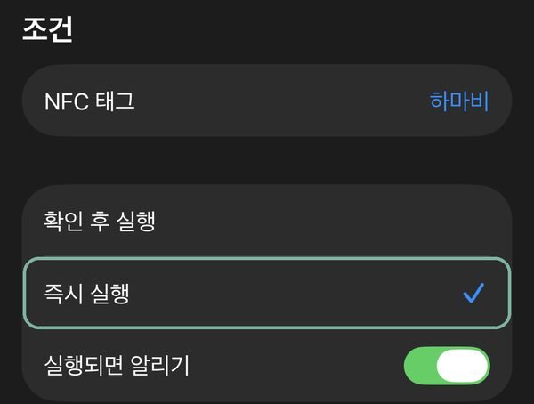
새로운 단축어 생성을 누릅니다.
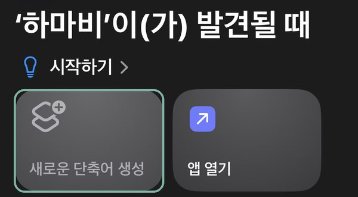
동작 검색에 ‘방해금지’를 입력해 집중 모드 동작을 넣고, 첫 칸을 눌러 토글을 고른 뒤 오른쪽 위 ✓를 누릅니다. 토글이어야 대면 켜지고 다시 대면 꺼집니다.
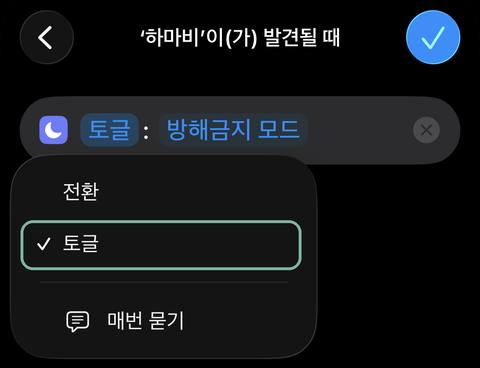
이제 하마비에 휴대폰을 대면 방해금지가 켜지고, 다시 대면 꺼집니다. 대는 순간 타이머까지 시작하려면 8단계에서 ‘URL 열기’ 동작을 추가하고 https://hanchae2623.github.io/hama/#v1-go를 넣으세요(내 하마비 문구가 Ⅱ면 v2, Ⅲ이면 v3). iPhone XS 이후 기종, iOS 버전에 따라 메뉴 이름이 조금 다를 수 있어요.
NFC로 방해 금지까지 자동으로 켜는 방법은 기종별로 확인 중입니다.
기록은 이 휴대폰의 브라우저 안에만 저장됩니다. 브라우저 데이터를 지우거나 다른 휴대폰으로 바꾸기 전에 백업해 두세요.
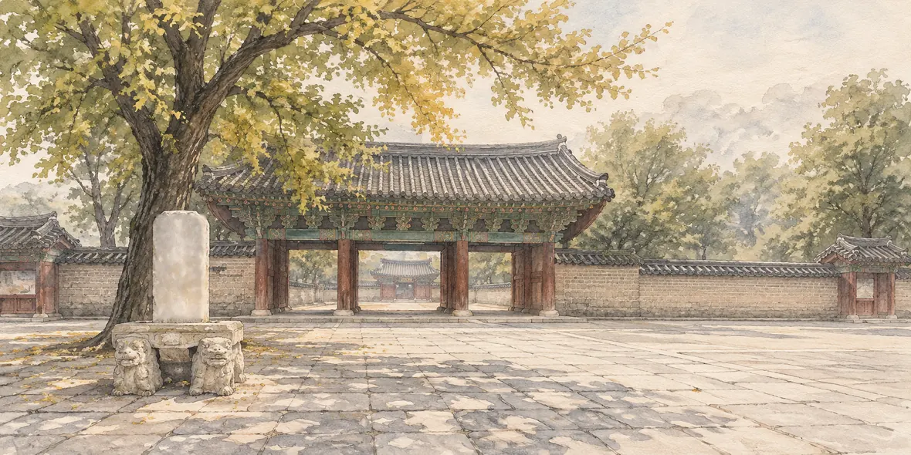
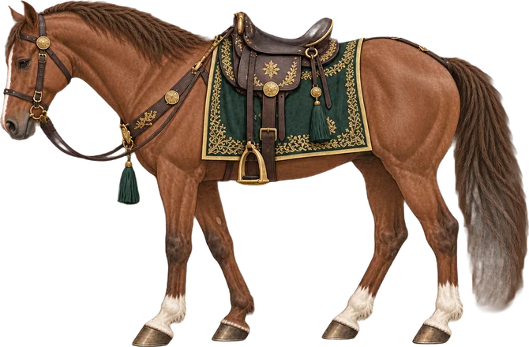
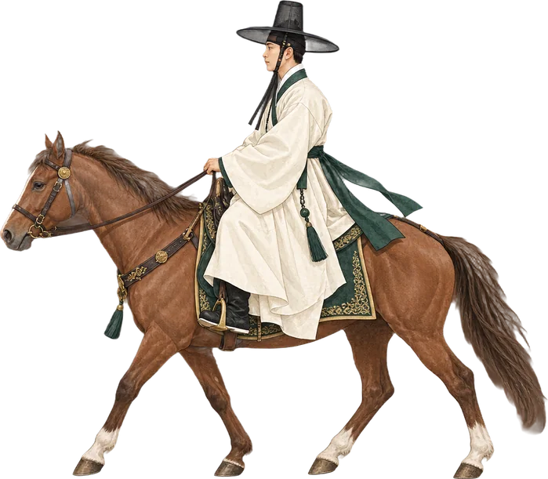
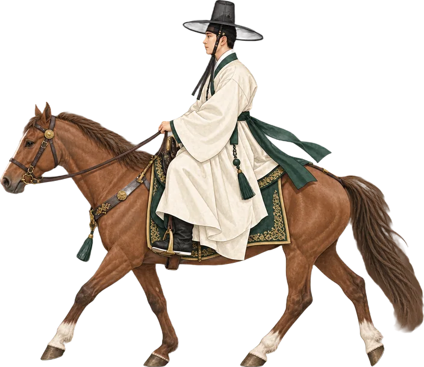
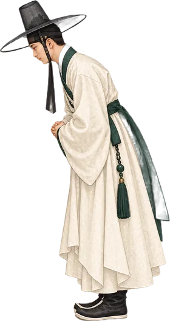